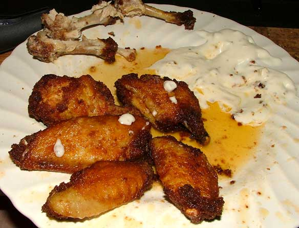
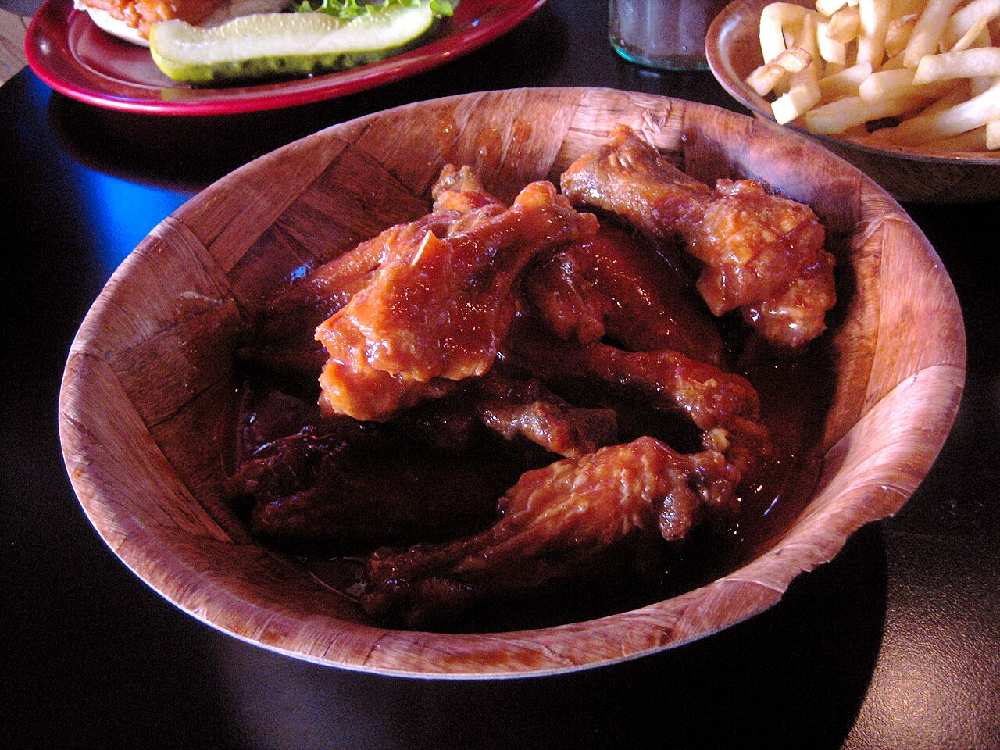

a style · NYBuffalo wings
also: Buffalo-style wings · hot wings · wings
In Buffalo nobody says 'Buffalo wings'. They say wings, and a medium order comes with blue cheese and celery whether you asked or not.

A chicken wing cut into a drumette and a flat, deep-fried bare — no batter, no flour — then shaken in a bowl with melted butter and a vinegar-based cayenne pepper sauce, and served hot with celery, carrot sticks and a dip of blue cheese or ranch. Heat runs mild, medium and hot, and the order names the heat before it names the count. The wing is named for Buffalo, New York, and has nothing to do with the animal.
The story Cited · wp-buffalo-wing
Chicken wings were cheap in 1964 because almost nobody ate them; they went into stock, into soup, or into the bin. Three stories explain what changed, and the Bellissimo family told all three.
In the first, Dominic Bellissimo was tending bar at the Anchor Bar on Main Street on a Friday night in March 1964 when friends turned up late, and his mother Teressa fried what she had and tossed it in cayenne sauce. In the second, which Dominic gave Calvin Trillin for The New Yorker in 1980, the midnight hour mattered: the bar's mostly Catholic drinkers could eat meat again at twelve, and he wanted something to hand them. In the third, Frank Bellissimo said a delivery went wrong — wings arrived instead of the backs and necks that went into the spaghetti sauce — and he asked Teressa to do something with them. Teressa sent the wings out with celery and blue cheese from the antipasto tray, and charged nothing for them.
John Young tells it differently, and told it first. Young moved to Buffalo from Stockton, Alabama in 1948, aged thirteen, and from 1961 sold whole uncut wings, breaded, deep-fried and drowned in a tomato-based sauce he called mumbo, at John Young's Wings 'n Things. A travelling boxer had told him about a restaurant in Washington, D.C. doing good business in wings, and he decided to specialise. Young registered the name at the county courthouse and left the area in 1970. He said the Anchor Bar did not carry wings as a regular menu item until 1974. A local newspaper profile of the Anchor Bar in 1969 does not mention wings; Duff's, across town, started selling them that same year. In 2013 the National Buffalo Wing Festival put John Young in its Hall of Flame.
The city settled nothing and celebrated anyway: in 1977 Buffalo issued a proclamation honouring Frank Bellissimo and named 29 July Chicken Wing Day. Trillin's 1980 piece carried the story out of western New York. Buffalo Wild Wings opened in 1982, Hooters in 1983, and the wing stopped being a Buffalo thing.
How it is done Cited · wp-buffalo-wing
Cut the wing at both joints. Keep the drumette and the flat; the tip goes to stock. Fry bare at a high heat until the skin browns and crackles — no dredge, no batter, which is the line Buffalo draws against Rochester. Melt butter into cayenne pepper sauce, classically Frank's RedHot, sometimes Crystal, and hold it warm; more butter reads mild, less reads hot. Drop the wings into a metal bowl, pour the sauce over, and shake. Sauce goes on after the fryer, never before. Celery and carrots on the plate, blue cheese in a cup.
Today Inference
Every bar in America sells a version, and most sell it beside a dozen other flavours. Buffalo's own joints hold the line on bare frying, blue cheese and a plain orange sauce, and Visit Buffalo Niagara runs an official Buffalo Wing Trail of shops in the region. Inference — the style's name now travels further than its method: 'Buffalo' on a national menu marks the sauce, not the fry.
Put it head to head →Where it sits for heat →
The particulars
| state | NY |
|---|---|
| cut | party wing |
| base | cayenne-butter |
| cooked | fried |
| heat | medium |
| region | Western New York, The United States |
| confidence | high · updated 2026-09-16 |
Not to be confused with
- Rochester breaded wings — Breading. A Buffalo wing goes into the oil bare; a Rochester wing goes in dredged.
Who it runs with
Who talks about it
Pictures
{kind=link}

{kind=link}

{kind=link}
Where we got it
- Buffalo wing · link
- Anchor Bar · link
- An Attempt to Compile a Short History of the Buffalo Chicken Wing — Calvin Trillin, 1980
- Buffalo, New York · link
Where it came from: Cited a source we name · Harvested pulled from an open dataset · Tradition what the tradition says, hedged · Inference this project's reasoning · Field somebody stood there. This record as JSON.